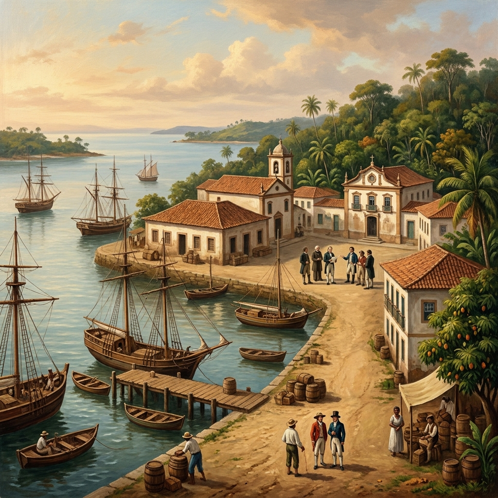
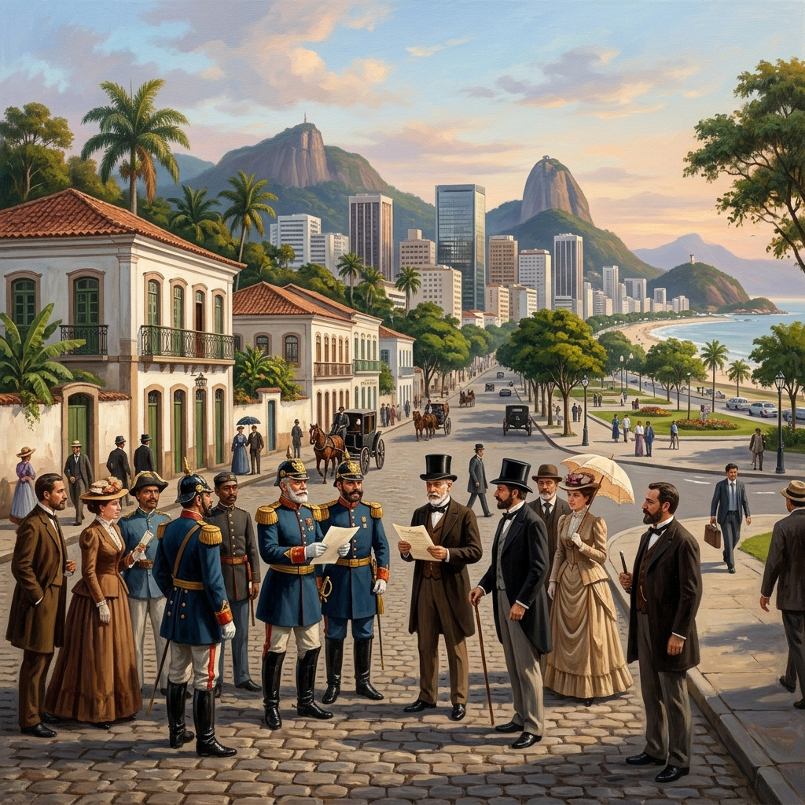

📜 História do Brasil
Colonização e Independência
Da chegada dos portugueses em 1500 à Independência de 1822, conheça os acontecimentos que marcaram a formação do Brasil.
Saiba mais ➜
A exposição História do Brasil apresenta os principais acontecimentos, personagens e períodos que ajudaram a formar o nosso país. São séculos de lutas, conquistas, culturas e transformações que mostram a diversidade e a força do povo brasileiro.
LINHA DO TEMPO
Colonização e período colonial
Independência do Brasil
Proclamação da República
Brasil moderno e contemporâneo
MOMENTOS MARCANTES

📜 História do Brasil
Da chegada dos portugueses em 1500 à Independência de 1822, conheça os acontecimentos que marcaram a formação do Brasil.
Saiba mais ➜
🏛️ História do Brasil
Da Proclamação da República em 1889 às transformações do Brasil contemporâneo, conheça as mudanças políticas e sociais do país.
Saiba mais ➜CURIOSIDADES

TABELA HISTÓRICA
| Período | Acontecimento | Data |
|---|---|---|
| Colonização | Chegada dos portugueses | 1500 |
| Independência | Grito do Ipiranga | 1822 |
| Império | Dom Pedro II e fim da escravidão | 1840 – 1889 |
| República | Proclamação da República | 1889 |
| Brasil contemporâneo | Redemocratização e Constituição de 1988 | 1988 – atualidade |
FONTES DE PESQUISA
Para conhecer mais sobre a história do Brasil, acesse as fontes abaixo:
HISTÓRIA DO BRASIL
Conheça os acontecimentos que transformaram o Brasil ao longo do tempo.
Garanta Seu Ingresso →